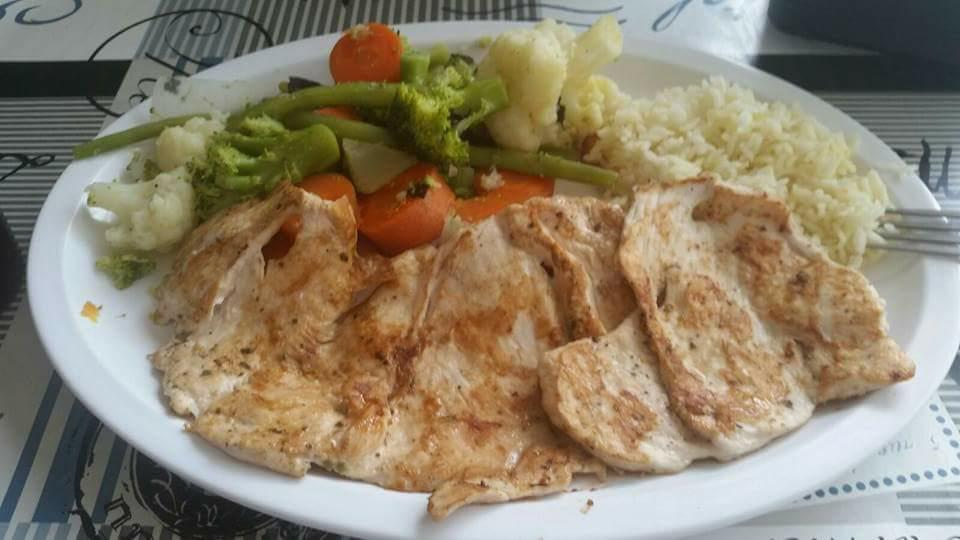
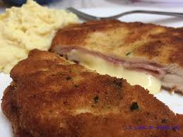
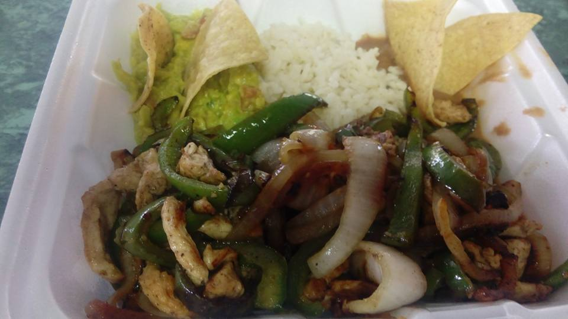
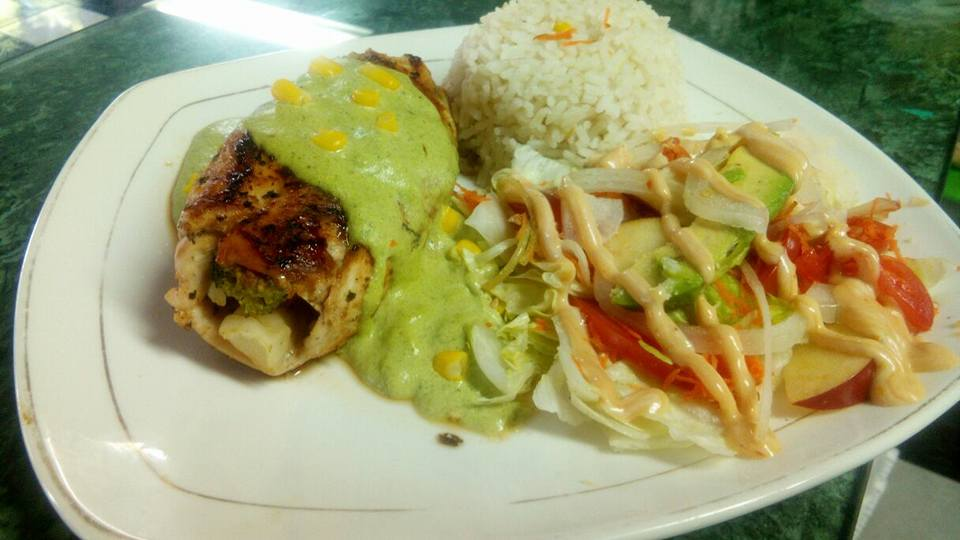

|
 |
PECHUGA CORDÓN BLUE
|  |
FAJITAS DE POLLOpechuga fileteada y cortada en trosos pequeños lavada tirada ala plancha y cortadno un chile pimiento en rajas y cebolla cortada en rajas y tirada ala plancha acompañada con verduras al vapor y arroz |
 |
PECHUGA EN SALSA DE CHAMPIÑONpechuga fileteada y lavada tirada ala plancha preparada con una salsa de chompiñones acompañada con verduras al vapor y arroz |
 |
PECHUGA RELLENA DE CHAMPIÑONESpechuga fileteada y lavada tirada ala plancha rellena con queso y chompiñones acompañada con verduras al vapor y arroz |
 |
PECHUGA POBLANA RELLENApechuga fileteada y lavada tirada ala plancha rellena con vegetales salteados bañada en una rica salsa poblana acompañada con ensalada y arroz |
 |
PECHUGA EL DON DE COMERpechuga fileteada y lavada tirada ala plancha y encima con jamon y queso bañada con una rica salsa de chipotle acompañada con papa el horno y arroz |
 |